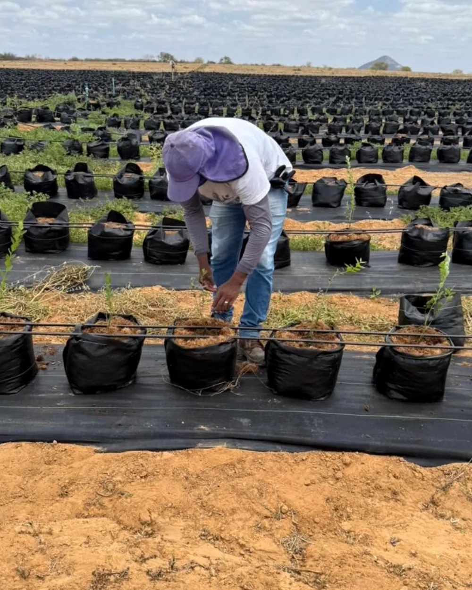
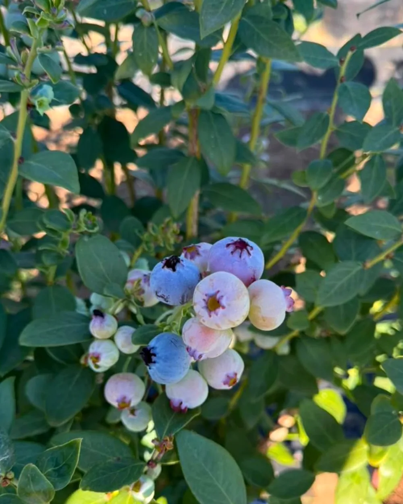
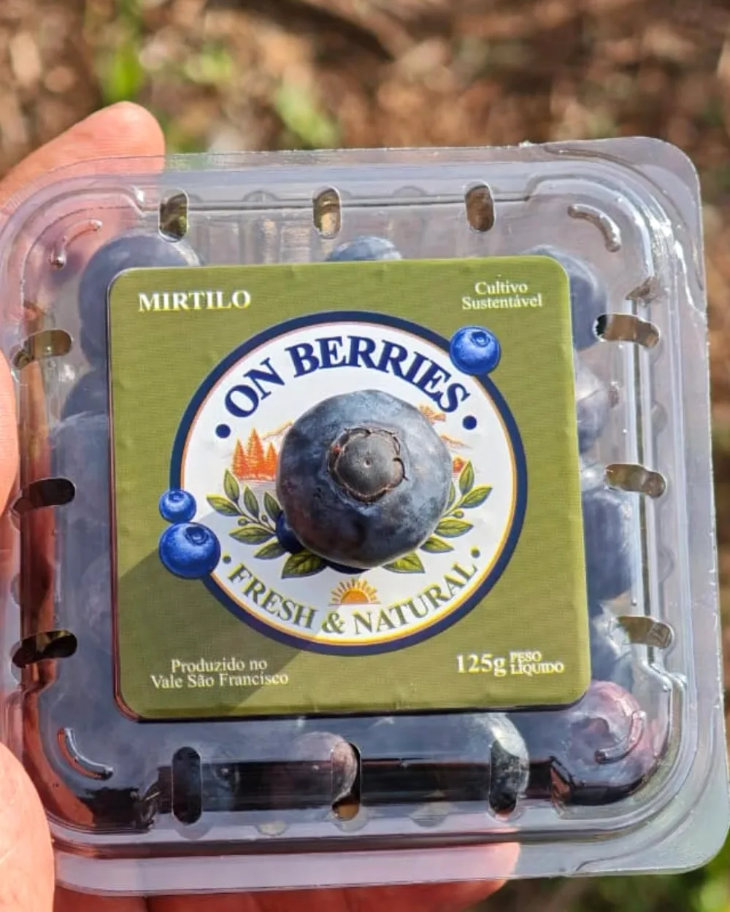
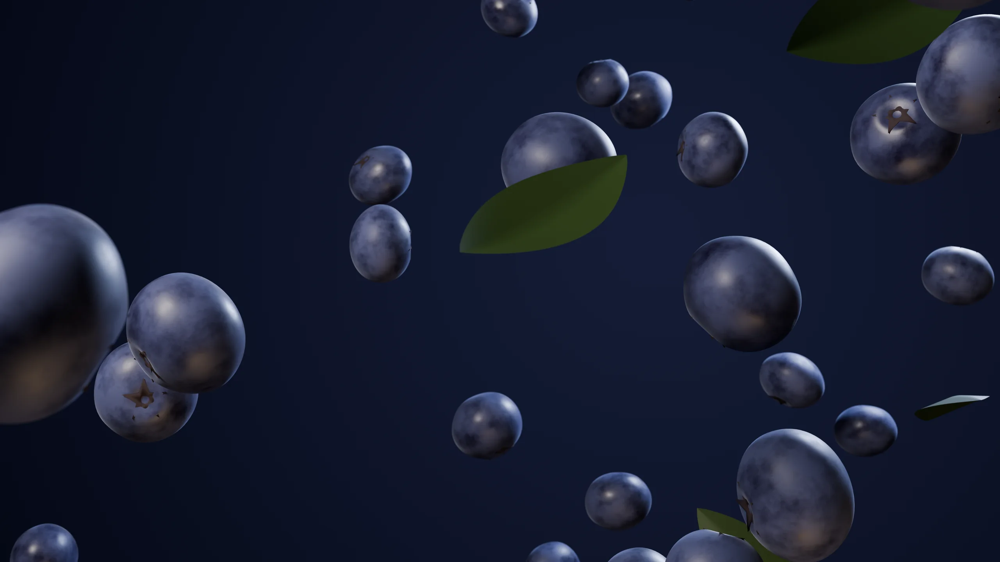
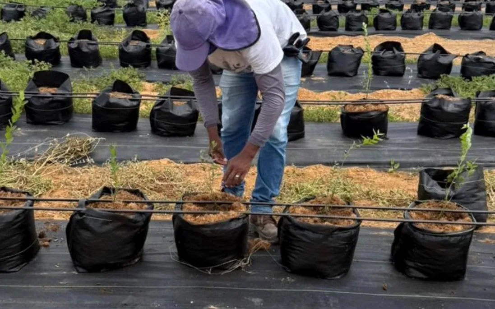

Antocianinas
O azul profundo do mirtilo vem das antocianinas, pigmentos naturais presentes na casca da fruta.
Berries e uvas do Vale do São Francisco
A On-Berry é uma empresa nacional de desenvolvimento agrícola, voltada à comercialização de berries e uvas do Vale do São Francisco.
A empresa
A On-Berry é uma empresa nacional com atuação em desenvolvimento agrícola, voltada à comercialização de berries e uvas do Vale do São Francisco.
O Vale do São Francisco é um dos principais polos de fruticultura irrigada do país, conhecido pelas uvas e mangas. É de lá que vem o mirtilo On-Berry, identificado na embalagem como de cultivo sustentável e produzido no Vale São Francisco.



Mirtilo
O mirtilo On-Berry chega ao mercado em cumbuca de 125 g, com a identificação de cultivo sustentável e origem no Vale do São Francisco.

Sobre a fruta
Aquela camada fosca sobre a casca se chama pruína. É uma cera natural que a própria planta produz para proteger o fruto da perda de água. Quando está inteira, é sinal de fruta fresca e pouco manuseada.
O azul profundo do mirtilo vem das antocianinas, pigmentos naturais presentes na casca da fruta.
O mirtilo é originário de regiões frias. No semiárido brasileiro, o cultivo usa variedades de baixa exigência de frio.
Lave apenas na hora de comer e mantenha na geladeira. Assim a casca e a pruína se conservam por mais tempo.
Uvas
Além das berries, a On-Berry atua na comercialização de uvas do Vale do São Francisco.
A região é a principal exportadora de uva de mesa do Brasil e, com irrigação e sol forte, consegue colher mais de uma safra por ano no mesmo parreiral.
Cultivo
O mirtilo é uma fruta de clima frio que ganhou espaço no semiárido irrigado. Estas são as etapas, do vaso à cumbuca.

Nos registros da On-Berry, as plantas de mirtilo estão em vasos sobre cobertura de solo, formato comum no cultivo da fruta no semiárido.
O mirtilo floresce em cachos de flores claras, que dão origem a frutos verdes e depois azuis.
Os frutos de um mesmo cacho amadurecem em tempos diferentes, por isso a colheita do mirtilo costuma ser feita em várias etapas.
O mirtilo On-Berry é embalado em cumbucas de 125 g, identificadas com a origem no Vale do São Francisco.
O Vale
Sol quase o ano inteiro, água do Rio São Francisco e clima seco fazem do Vale um dos polos de fruticultura irrigada mais importantes do país.
3.000h
de sol por ano, aproximadamente, na região
2,5
safras de uva por ano, no máximo, no polo irrigado
9°S
de latitude, perto da linha do Equador
A fruticultura da região é irrigada com água do Rio São Francisco.
A baixa umidade do ar reduz a incidência de doenças fúngicas nas lavouras.
A região reúne estrutura de embalagem, câmaras frias e transporte para o mercado interno e externo.
Contato
Para compras, parcerias comerciais e imprensa, fale com a On-Berry pelo Instagram.